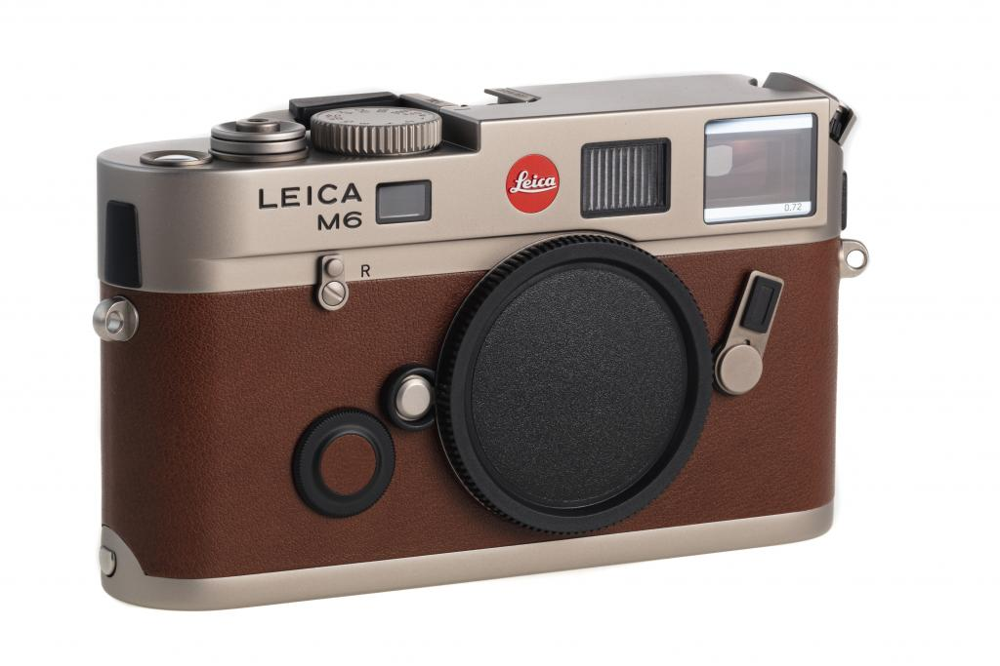
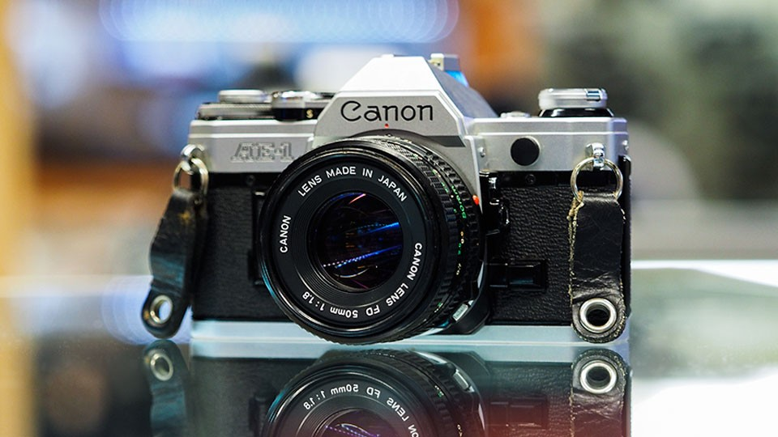
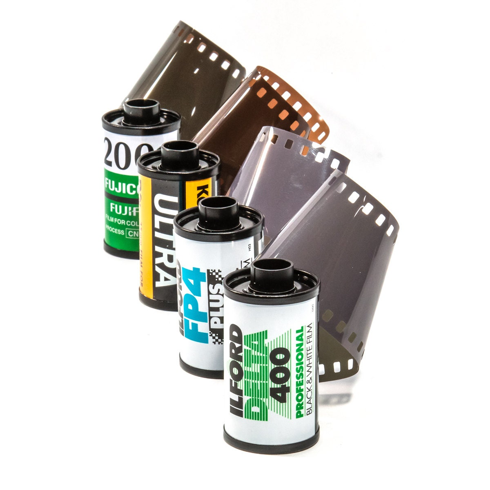
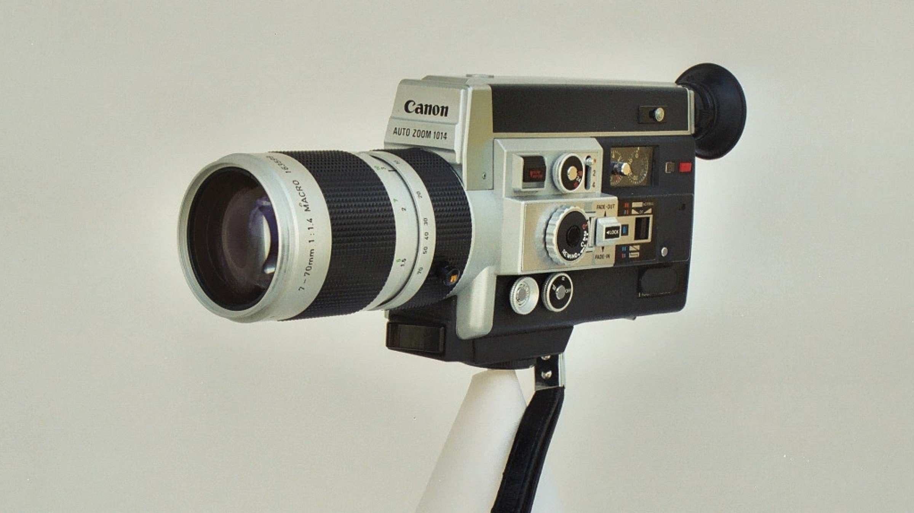
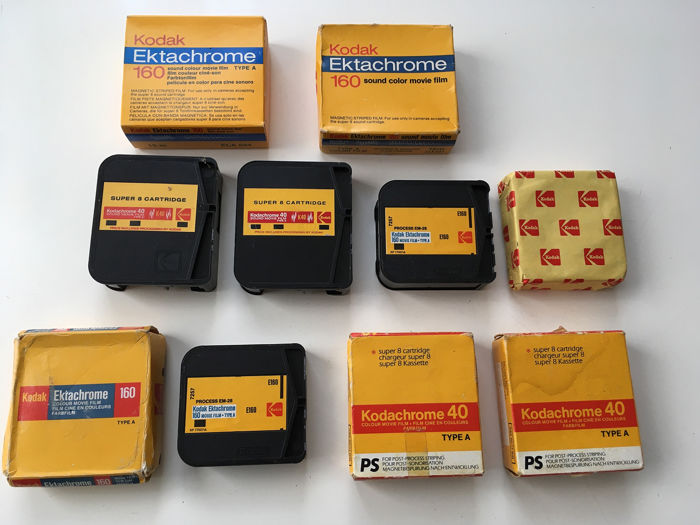
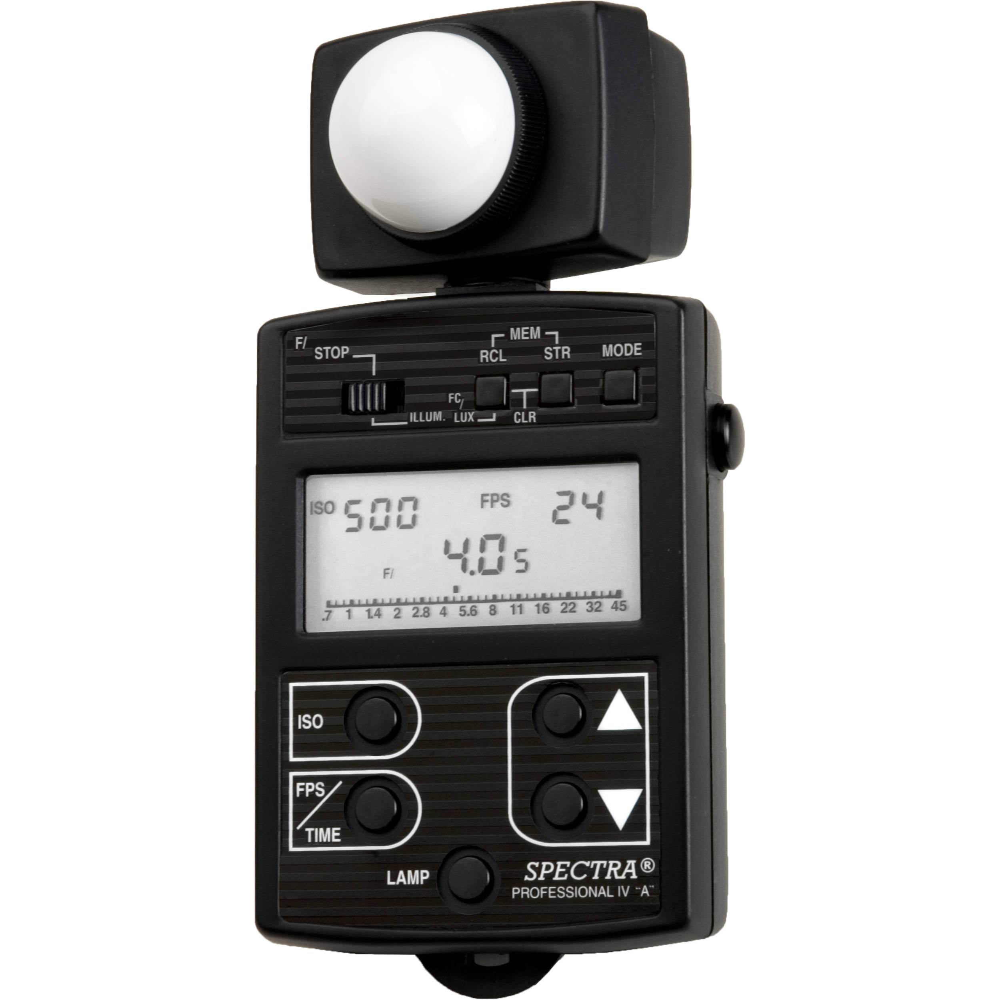

Film Has No Expiration Date
HOME
GALLERY
LISTS
TABLE
CONTACT
FAVORITE WEBSITE

35mm Film Camera

Another 35mm Film Camera

Rolls of Exposures

Super8 Camera

Super8 Film Cartridges

Light Meters